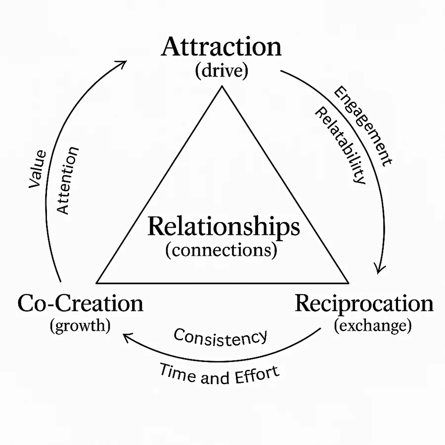
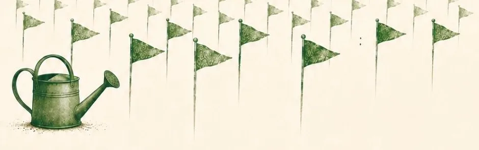
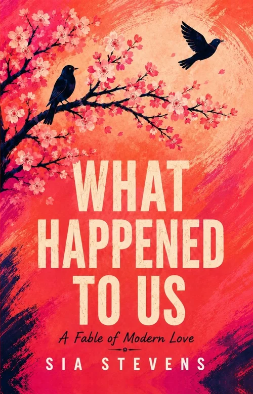

A bold new framework for modern love
A Million Green Flags
How to Build Lasting Relationships in the Digital Age
This book won’t teach you to avoid red flags. It teaches something better: how to grow the green ones.
Why dating feels harder now
The most connected generation in history, and the loneliest ever measured.
Fewer dates. Fewer marriages. Millions quietly deciding that single is safer. The people didn’t get worse. The conditions did. When love loses value, partners get treated like paper cups: used, crushed, replaced.
The ghosting, the breadcrumbing, the toxicity, the games. These aren’t character flaws. They’re symptoms of a starving generation, in a world engineered to keep it hungry.
- The questions you’ve been asking at 2am
- Why does nobody put in effort anymore?
- Why is everyone so flaky?
- Why is commitment terrifying and the situationship the norm?
- Why do you get called demanding for asking for the bare minimum?
- A Million Green Flags is the manual nobody handed you. Drawing on psychology, behavioral economics, and stories that will rearrange how you see your own relationships, it answers the questions you’ve been asking at 2am.

The framework
Attraction. Reciprocation. Co-creation.
Attention and value are the two raw materials every connection is made of. Each stage is those two doing different work, and the stages are a cycle, not a staircase. When the cycle keeps turning, the relationship lives. When it stops, you get the sentence everyone says: nothing happened, it just faded. The three sentences every fading couple says each name the exact stage that stopped.
The spark faded, we grew apart.Attraction
I feel like I’m the only one trying.Reciprocation
We’re going with the flow.Co-creation
Part one · The flags
“Nothing happened” is the defining breakup of our generation. And it’s a lie.
Something happened: slowly, structurally, invisibly. By the end of this book you will be able to name every stage of it, see it coming, and build in a way that prevents it.
A workbook, not a lecture
The activity
Myth or reality?
Before this book teaches you anything, find out what you already believe. Ten sentences you’ve heard all your life. Tap a verdict for each.
Answers in Chapter 1Done. Check your answers in Chapter 110 of 10
Part two · Attraction
Attraction is a measurement, not magic.
A live reading of perceived value: rising, falling, buildable, rebuildable. The frosting gets you to pick up the fork. The cake is what actually fills you.
What the gauge measures, why chemistry fades on schedule, and what makes you worth choosing.
Attraction tracks scarcity
The activity
Two inboxes
The same market, seen from two seats. Tap Rare or Common, fast, from your own experience.
Her inbox
His inbox
Chapter 4 · The Marketplace ShiftDone. Chapter 4 explains the pattern4 of 16
Part three · Reciprocation
The ordinary Tuesday is the relationship.
Grand gestures predict nothing. Tuesdays predict everything. And love that only gives and never receives isn’t noble. It’s a slow death with good manners.
People over things
The activity
Who gets the call?
Ten ordinary needs. Who actually got the call last time: a person, or a service?
Chapter 12 · Needing and Being NeededDone. Chapter 12 · Needing and Being Needed4 of 10
Part four · Co-creation
Love consumed burns down. Love built compounds.
When novelty fades, don’t replace the person. Create something new with the person. Ask any couple the only question that predicts more than a compatibility quiz: what exists in the world because of your love that didn’t exist before it?
Create, don’t replace
The activity
The two columns
Which side has been truer of your most important relationship this past month? Pick one per row.
Chapter 16 · The Orchard TheoryDone. Chapter 16 · The Orchard Theory3 of 8
Part five · The labors
You don’t ask the heart. You ask the bow.
Five labors: shrink the noise, sharpen the presence, reward the effort, resist the shortcut, hold the line. They transform people. Or they sort them.
Then twenty-seven green flags, one per chapter. Look for them. Then be them.
Low temperature, held line
The activity
Text back
Jake. Third time in a row he’s cancelled last minute. Pick the reply you’d actually send.
Hey sorry, I can’t make it tonight. Something came up.
Chapter 25 · Hold the LineDone. Chapter 25 · Hold the Line1 of 3
The whole book as a checklist
27 green flags in a relationship
One flag per chapter. Twenty-seven: three stages, compounded over themselves, three times three times three. Look for them. Then be them.
Ideas you’ll keep
Six images for how love really works
The paper cup
You drink from it, crush it, toss it, without a second thought. You’d never do that to a ceramic mug you love. Why would anyone apologize to a paper cup?
Frosting and cake
The frosting is the surface: looks, charm, the initial shine. The cake is everything underneath: personality, humor, intelligence, character.
The orchard
When novelty fades, don’t replace the person. Create something new with the person. Love consumed burns down. Love built compounds.
The churn
The same milk that curdles when neglected becomes butter when churned well. Healthy relationships transform people into their green flags.
The container
A good pot doesn’t prevent heat. It holds heat. Every couple fights. Lasting ones fight inside a container.
The bow
You don’t ask the heart. You ask the bow. Vows are free; labors cost.
From the pages
Read a little first
“We are the most relationship-educated generation that has ever lived. We know our attachment styles and our love languages. We can identify gaslighting, name our boundaries, spot a red flag from across a bar. Our grandparents had none of this vocabulary, and their relationships, for all their real flaws and real injustices, held. We know everything. We build nothing.”Chapter 5 · Knowing Everything, Building Nothing
“The ordinary Tuesday is not the filler between the real moments. The ordinary Tuesday is the relationship, thousands of times over. Whoever shows up for it is who you’re actually with.”Chapter 15 · The Tuesday Test
“When novelty fades, don’t replace the person. Create something new with the person.”Chapter 16 · The Orchard Theory
“The flags were never labels. They’re seeds. Both colors, in everyone, waiting on conditions.”Twenty-Seven Ideas to Keep

Reviews
The first reader wasn’t human
Before publication, Sia gave the complete manuscript to Claude, an AI model made by Anthropic, and asked for honest, unsparing reviews. These are excerpts from what it wrote, criticism included.
“Most relationship self-help is a bag of insights with a cover on it. This is an argument with a spine.”
“Most books in this aisle flatter the reader. This one hands you a shovel.”
“The best chapter overall arrives near the end, and it is not what anyone will expect from a book with this cover.”
“A reader closes the book understanding the last breakup with real precision and holding comparatively little to do on Monday.”
Read it? Reader reviews help other people find the book.
Read the full reviewsReview on AmazonQuestions
Before you buy
What are green flags in a relationship?
Green flags are the signs that someone is building with you, not just enjoying you: they put the phone face-down when you start talking, they show up on ordinary Tuesdays, they repair after fights without being pushed. But the book’s first argument is that flags aren’t absolutes. “We all carry both red and green flags within us. And what brings one color out over the other isn’t luck, astrology, or finding ‘the one.’ It’s the conditions we create around each other.” That’s why green flags can be grown. See all 27.
Why does the spark fade?
“Nothing happened” is never true. The fade has stages, and every stage has a name, a mechanism, and a repair. The fade of intensity is not the end of love. It’s the end of the advertisement for love. Tolerance is the consumer’s curse, and the creator’s engine.
Why does modern dating feel so hard?
The people didn’t get worse. The conditions did. Attention is the currency of love, and for the first time in history a trillion-dollar economy is competing with the people you love for yours. Options feed desire; focus starves it. Part One explains what happened, and Part Two explains how attraction works in today’s market.
Is it for single people or couples?
Both. Part Two covers attraction and the modern dating market. Parts Three to Five are about keeping a relationship alive and growing once you’re in one. Many of the 27 activities ask you to look at a past relationship, romantic or otherwise, and they work alone or together.
How is this different from What Happened to Us?
A Million Green Flags explains. What Happened to Us shows. The novel walks the same three stages as a story, the year one engineer spent finding out why her relationship faded. Some readers find ideas land deepest as argument; others need to watch them lived. You can read either one first.
Keep going
The rest of the framework

The novelWhat Happened to Us
A Million Green Flags explains. What Happened to Us shows: a love that quietly faded, and the journey to understand why.
The courseModern Relationships 101
A book can hand you a model. Only practice can hand you a skill. The same three stages, taught through short lessons and real activities.
The appRed Flag Detector
The record-keeping system from The Labors. Track patterns, promises, and what actually happened the last three times a standard was held.
Every Tuesday
The Relationship-Care Routine
Everyone has a skin-care routine. This is the other one. One small practice a week, built on the same three stages.

About the author
Sia Stevens
Sia Stevens is a writer and relationship educator. Before either of those, she was a software engineer—a decade building systems at scale—and then an MBA, studying how incentives shape what people do. Somewhere along the way, the question changed: from how systems fail to why the most important system of all—the way we love—quietly fails the people running it. She lives in Seattle, in sight of Mount Rainier.
She is the author of the novel What Happened to Us and the creator of Modern Relationships 101.
More from Sia Stevens